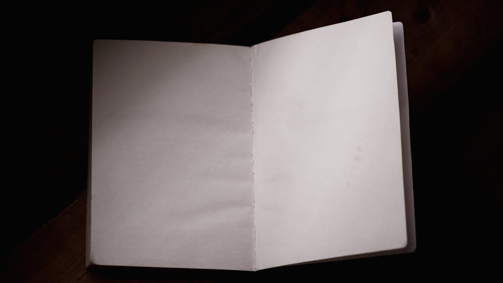

Foreword
どういう場所で、どうして始まったのか

子供の頃、紙の辞書を使えと言われて育った。電子辞書はだめなんだそうだ。いま同じことを言う人がいたら、尖った思想の持ち主だと思われる。
大人になって、紙の辞書の良さもわかるようになった。ページをめくる感触、目的の単語の隣にある別の単語に目が滑る瞬間、引き終わったあとに本を閉じる動作。それらには、たしかに意味があった。ただ、いまや二百グラムに満たない端末から、あらゆる辞書の中身どころか、地球の裏側で誰かが今朝何を食べたかまでわかる時代に、あの重さをカバンに背負わせようとは、もう思えない。
字を書くにも鉛筆が利口だとされた。だが、シャープペンシルもそのうち許されるようになって、いつからか消せるボールペンまで一般的になった。いまはほとんどの文字を指先で叩いて済ませている。かつて紙の辞書と同じように厚みを競っていた電話帳も、地図も、その端末の中に静かにおさまっている。
ただ、道具の中に預けられないものもある。知りたい、確かめたいという欲求そのものだ。これだけは、誰かに頼むことも、機械に任せることもできない。
昔から、授業の内容より、そこで横道にそれた話や、ふと自分の頭に浮かんだ疑問のほうに気を取られていた。教えられていることはたいがい覚えていないのに、そういう余白だけはいまも覚えている。気になったことは、忘れたくなくて書き留める癖があった。紙だったものが Windows のメモ帳になり、Evernote になり、いまは Notion に変わった。媒体だけが移ろって、やっていることはずっと同じだ。
そうしたメモは、自分のためだけのもので、公開するつもりもなかった。メモアプリを乗り換えることになり、過去のページを整理するなかで、どこで拾ったのか記憶のない話も、いまでは見方が少し変わっているかもしれない話も、あちこちに雑多に残っていることに気づいた。いっそ、根拠を拾い直して並べ直してみたい。そう思ったのが、このサイトの始まりだ。
たどり直すときに、自分なりのルールをいくつか決めた。記事を書く前に、できるだけ元の論文や書籍に当たること。記事ごとの形式を揃えること。専門の深いところには踏み込まず、手前にある「面白さの核」だけを取り出すこと。自分の感想や解釈を、必要以上に挟まないこと。書いたあとも、何を参考にして書いたか、どのくらい確かな話かを、記事のなかにちゃんと残しておくこと。どれも地味なことだが、過去の人たちが残してくれたものへの姿勢としても、読んでくれる人への伝え方としても、これらを守ることにした。
並べ直してみると、ここに集まっていたのは、どれも誰かが夢中になって追いかけてきたものだった。途中でやめることができなかった人たちだ。一つの問いから離れられなくなって、何年も、ときには何十年もそれを追いかけ続けた。その結果が、いま論文や本の形で残っている。私がすることは、それを集めて読み解き、読者がたどれる順番に置き直すことだ。
このサイトは、答えを渡す場所ではない。読み終えたあとに、むしろ分からないことが増えているような、そういう書き方をしている。読者がそこから先に進みたくなったときのために、参考文献を残してある。
読み終えたとき、ものの見え方が、読み始めた頃より少しだけ奥行きを持ちはじめている。そこに戻り道はない。
知る前の自分には、もう会えない。
大げさに聞こえるかもしれない。実際は、世界は何も変わらない。こちら側の目が、少しだけ変わっただけだ。その目には、前は見えなかった輪郭が立ち上がっている。
ここから先の道は、もう並べてある。